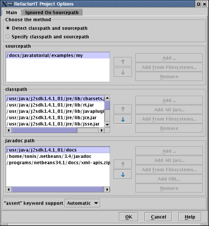

You can always check/modify project settings via the Project Options dialog. To open the dialog, choose Tools->RefactorIT->Project Options from the IDE main menu or the same command via contextual menus.

RefactorIT can autodetect (refer to Autodetection of Project Settings) all paths or you can choose to manually specify the paths.
You can also specify the Assert Keyword mode such that:
If enabled (disabled) the Java assert keyword will (not) be supported.
If set to "automatic" (the default option), RefactorIT guess as to whether or not it supports the assert keyword by looking at the current JDK version.
Using the "Ignored On Source path" tab you can specify packages or filesystems in the source path that are to be ignored. RefactorIT will act as if these items do not exist. This is useful when you need to reduce memory requirements when working with large projects or temporarily hide parseable code from RefactorIT. Ignoring source path items can sometimes make the rest of the code unparseable. One way to solve this is to put the ignored items in the class path as compiled class files.
Please refer to project settings for more information.